Глава 1. Знакомство с GIMP
GIMP (GNU Image Manipulation Program) ― свободно распространяемый растровый графический редактор, распространяющийся на условиях GNU General Public License. Это обладающий интуитивным интерфейсом «свежий глоток воздуха» среди профессиональных программ по созданию и обработке растровой графики.
Установка
Последняя стабильная версия приложения может быть найдена на официальном сайте GIMP. Перейдём в раздел «Downloads».
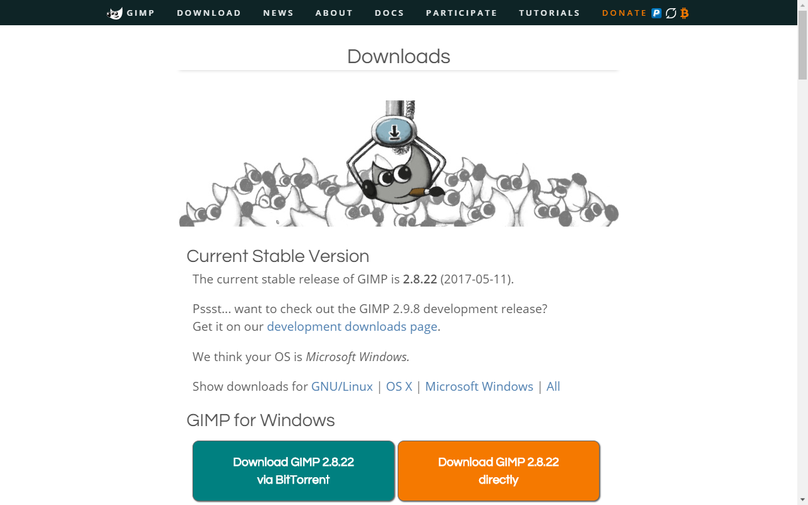
Здесь вам будет предложено загрузить программу установки GIMP для операционной системы, запущенной на вашем компьютере.
- Нажмите на надпись в оранжевом блоке.
- Запустите программу установки.
- Нажмите «Установить».
- По желанию установите предлагаемую на странице справку на русском языке (
Russian (∀ MB)) для внутренней помощи по программе без дальнейшего подключения к сети Интернет. Документация.
Стоит отметить, что минимальные системные требования редактора для наших учебных целей весьма демократичные:
| Характеристика | Минимум |
|---|---|
| Платформы | GNU/Linux, macOS, Windows и пр. |
| Разрядность | x86, x64 |
| Процессор | Intel Pentium III или эквивалент |
| Оперативная память | 512 МБ |
| Свободное место на диске | (200 ± 75) МБ |
| Видеоадаптер | любой с поддержкой 3D |
| Видеопамять | 64 МБ |
| Разрешение экрана | 1024×768 |
На первый запуск может понадобиться некоторое время.
Быстрая загрузка
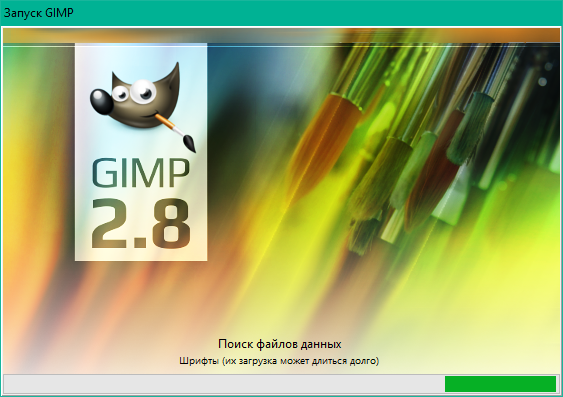
Прежде всего отметим, что обычный запуск GIMP может быть замедлен, потому что происходит загрузка шрифтов. Чтобы избежать её, запускайте программу с флагом -f. На следующем снимке приведён пример ярлыка быстрого запуска GIMP, созданного в ОС Windows.
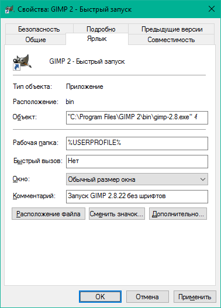
К счастью, даже если отключить загрузку шрифтов, в приложении всегда можно будет просканировать шрифты тогда, когда вам это будет нужно.
Рабочая область
Запускаем GIMP 2 и видим интерфейс, состоящий из трёх окон. Окно изображения с панелью меню вы видите по центру снимка, а по бокам ― стыкуемые диалоги.
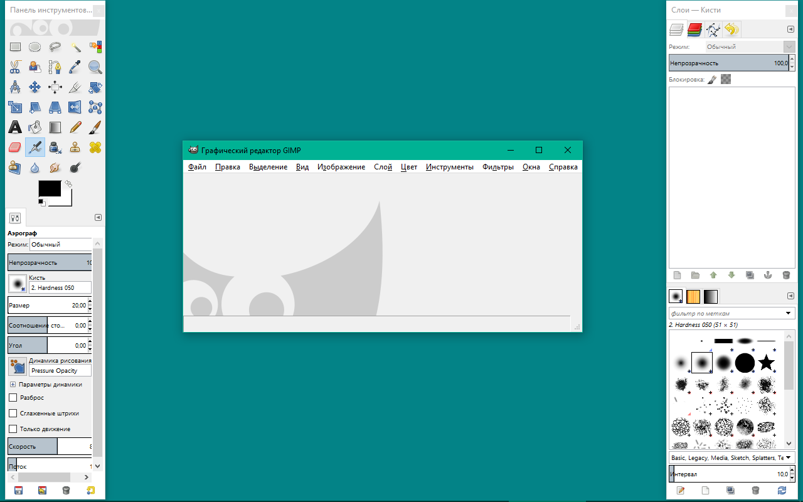
Подготовления
В качестве упрощения, переведём редактор в однооконный режим. Для этого выберите пункт меню Окна → Однооконный режим. Ещё настроим ширину панели инструментов так, чтобы можно было хорошо рассмотреть нижележащие параметры.
Давайте посмотрим, какие сочетания клавиш работают в программе: выберите пункт меню Правка → Комбинации клавиш.
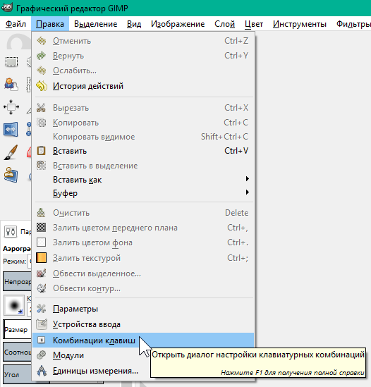
Не исключаются такие случаи, когда комбинации клавиш могут не работать, но в ответственный момент их знание может здорово помочь.
Работа со вкладками (стыкуемыми диалогами)
Параметры GIMP, которые предстоит регулярно менять при обработке изображений, вынесены в отдельные вкладки (т. н. «стыкуемые диалоги»). Перечень всех вкладок можно найти в подменю Окна → Стыкуемые диалоги.
Вкладки можно объединять в панели, которые в свою очередь можно группировать с другими панелями и встраивать в окно изображения (при условии, что редактор в однооконном режиме).
Создадим вкладку для регулировки цветов переднего плана и фона. Обратитесь к одной из панелей: нажмите кнопку с серой стрелкой, а в меню выберите Добавить вкладку → Цвета.
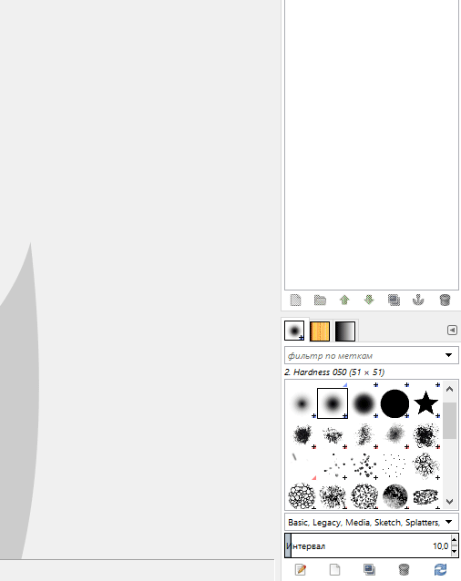
Открытую на панели вкладку можно удалить, выбрав Закрыть вкладку
Изображение
Если вы хотите создать новое изображение: нажмите Ctrl + N или выберите пункт меню Файл → Создать, во всплывающем окне задайте параметры. Размеры, разрешение и фон изображения, в основном, зависят от контекста, в котором оно используется.
Например, если вы создаёте переиспользуемую графику, вам больше понравится наличие альфа-канала на фоне, а потому параметр «Заполнение» будет у вас иметь значение Прозрачный слой, и размер ― чем больше, тем лучше.
Разрешение по осям устанавливается, исходя из требований, предъявляемых к печатному макету: допустим, 300 пикс/дюйм. Если же изображение разрабатывается для электронных носителей информации, то ему часто дают 72 или 96 пикс/дюйм, а разница их отображения, как правило, в обозревателях отсутствует, потому что разрешение в них не учитывается.
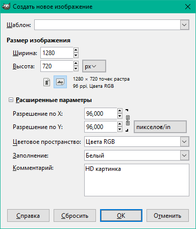
На снимке приведены параметры HD изображения с белым фоном. Будем использовать его для проверки простых инструментов.
Шаблон создания
Теперь вы можете сохранить новый шаблон через меню Файл → Создать шаблон.... В него войдут только размер, разрешение, цветовое пространство, заполнение и комментарий. В нашем случае это: 1280×720, 96 PPI, Цвета RGB, Цвет фона, HD картинка.

Теперь шаблон можно указать при создании нового изображения, чтобы автоматически вставить нужные значения. Управление шаблонами производится во вкладке Шаблоны.
Манипуляции с целым изображением
Попробуйте сместить изображение внутри рабочей области, не производя изменений: зажмите колёсико мыши или клавишу Пробел и перенесите курсор в другое место.
Теперь создайте копию изображения через меню Изображение → Создать копию. Сразу под меню у вас появляется второе изображение-проект, которое вы можете закрыть. После копирования история изменений может быть найдена только в исходном проекте.
Вы можете менять размер холста и самого изображения. Меняя размер холста, вы добавляете или удаляете пространство ― подобным образом устроены операции кадрирования (Холст по размеру слоев, Откадрировать в выделение и пр.). Меняя же размер изображения, вы его растягиваете в сторону наращивания количества пикселей или их уменьшения.
Интерполяция
Правило, по которому происходит замена пикселей при растягивании, называется интерполяцией. Она применяется во всех деформирующих алгоритмах над слоями и изображением, приводя к сглаживанию растра. Если её отключить, растягивание будет происходить по ближайшему соседу.
В простых случаях используют билинейный фильтр, но бикубический даёт действительно хороший результат. Интерполяцию по Ланцошу (Sinc) хорошо применять для создания высококачественных миниатюр, передающих резкость оригинального изображения. Но помните, что если изображение приходится увеличивать, оно уже теряет первозданное качество. Поэтому советуем избегать чрезмерной работы с деформирующими алгоритмами на одном и том же слое.
Направляющие
Параллельные осям X и Y, вспомогательные прямые, к которым может производиться привязка. Добавьте одну через меню Изображение → Направляющие → Создать направляющую..., задайте процент от изображения, где следует разместить направляющую, или отведите её с помощью инструмента Перемещение. Чтобы удалить направляющую, переместите её на линейку.
Простые инструменты
Панель инструментов, находящаяся на левой панели, содержит все те же инструменты, что содержатся в меню Инструменты, за исключением Операции GEGL и Цвета. Под инструментами видны параметры выбранного инструмента.
Карандаш
Инструмент, который резко закрашивает цветом переднего плана все пиксели, попадающие под выбранный мазок кисти. Инструмент хорошо подходит для работы с участками малого размера, где не требуется сглаживание.
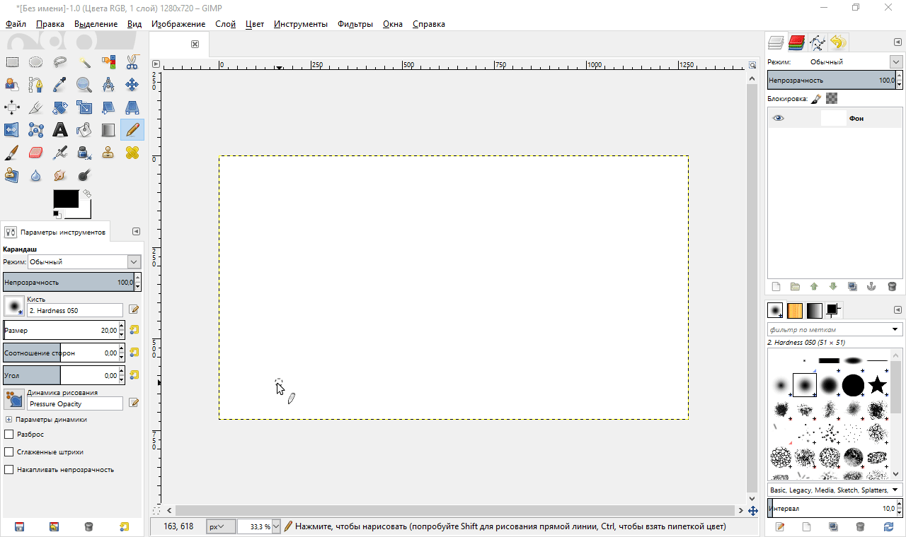
Удерживайте клавишу Shift, чтобы проводить прямые следы между точками нажатия левой кнопки мыши (редактор запоминает место последнего мазка). При помощи Ctrl можно взять цвет с изображения пипеткой.
Как и для кисти, свойства которой мы ещё рассмотрим, параметрами карандаша служат прозрачность, размер, соотношение сторон, угол, параметры динамики и пр.
 Масштаб
Масштаб
Инструмент, который приближает и отдаляет изображение и ни на что больше не влияет.
Простое нажатие левой кнопки мыши приводит к кратному масштабированию. Если удержать кнопку мыши и выделить какой-нибудь участок, то масштабирование будет проведено таким образом, чтобы мы могли полностью его разглядеть.
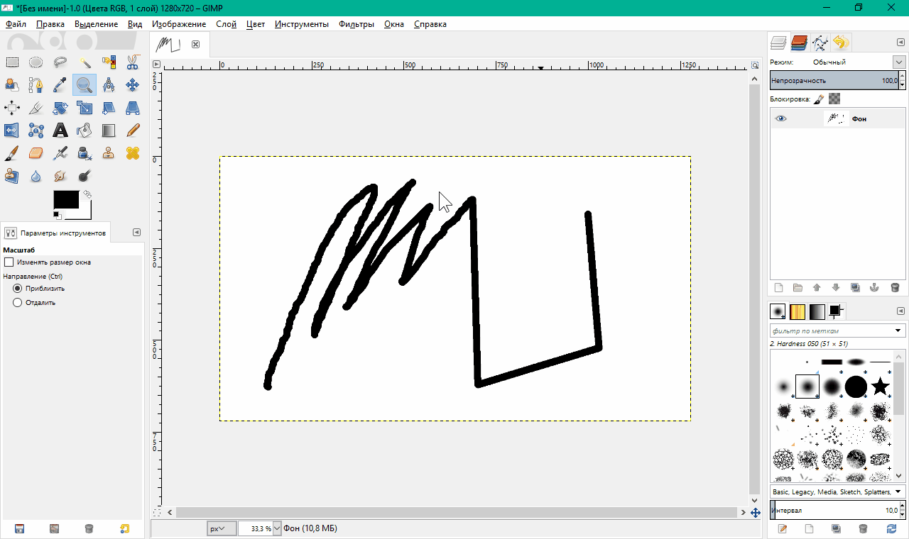
Удерживайте Ctrl, чтобы проводить обратную операцию.
Другие возможности масштабирования вы можете найти в меню Вид → Масштаб (∀%).
 Измеритель
Измеритель
Инструмент, который создаёт отрезок и выводит информацию о расстоянии между двумя точками по осям X и Y, углу относительно X.
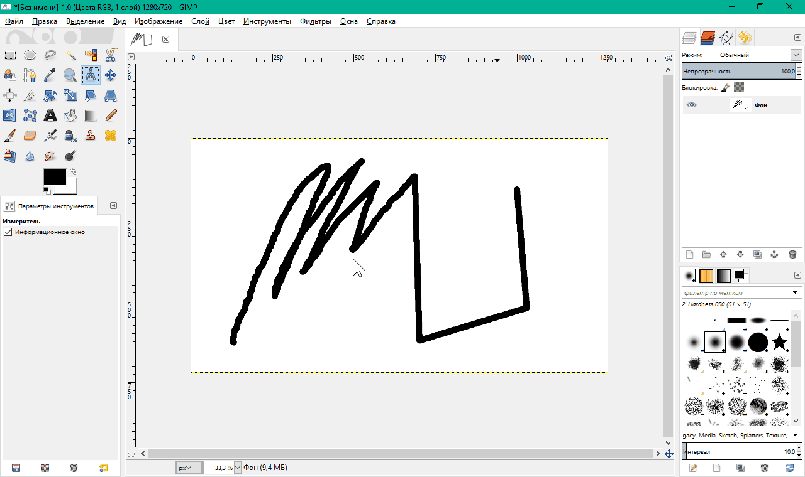
Удерживайте Ctrl, чтобы откладывать отрезок под кратным углом. Alt позволяет переместить весь отрезок.
Заметьте, что нужная информация также содержится в строке состояния (в самом низу по середине).
 Прямоугольное выделение
Прямоугольное выделение
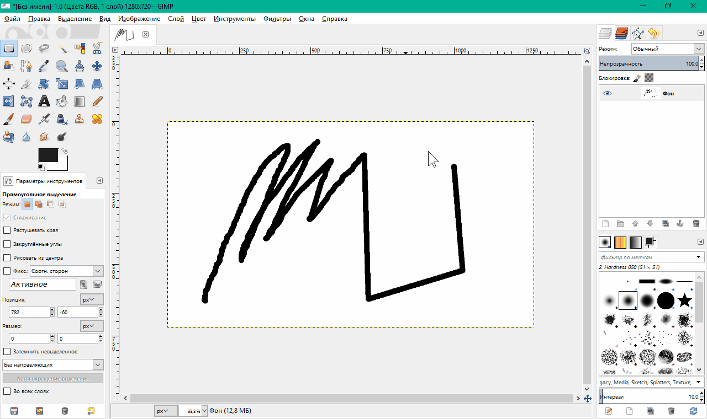
Удерживайте Shift, чтобы добавлять выделение (или не удерживайте, чтобы заменить выделение). Используйте Ctrl, чтобы убрать часть выделения. На выделении (или его отрицании) по углам и сторонам будут элементы управления, которые позволят изменить позицию и размер выделения. Зажмите Alt, чтобы просто перемещать выделение.
Чтобы стереть внутренности выделения, нажмите Delete. Также можно проводить иные транформации с выделенным участком слоя.
 Перемещение
Перемещение
Инструмент, который перемещает объект, находяйщийся под курсором. Тип объекта задаётся в параметрах: слой, выделение, контур.
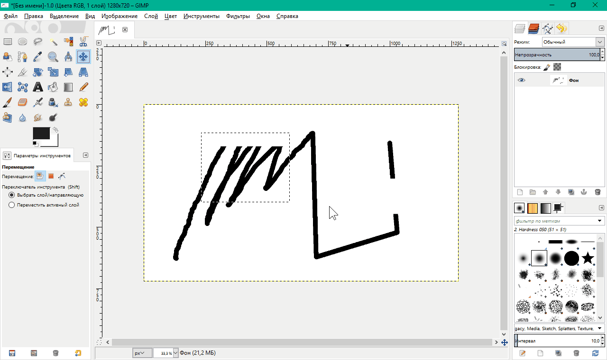
Удерживайте Shift, чтобы перемещать активный объект (выделенный в соответствующей вкладке) вне зависимости от того, находится ли он под курсором.
Shift+Alt позволяет создать плавающее выделение из текущего слоя.
Справка
-
Если вы установили руководство пользователя на свой компьютер, вы можете воспользоваться помощью по GIMP без подключения к сети Интернет.
-
Если вы этого не делали, просмотрщик справки GIMP открывает онлайн-руководство.
Наши тесты показали, что в последних версиях расширение «Просмотрщик справки GIMP» может работать неустойчиво. Поэтому очень советуем вам добавить в закладки своего веб-браузера:
Если «Просмотрщик справки GIMP» работает хорошо на вашем компьютере, он позволит открыть контекстную помощь по наведённому пункту меню, инструменту или окну при нажатии F1. В боковом меню можно переключиться на другой раздел справки.